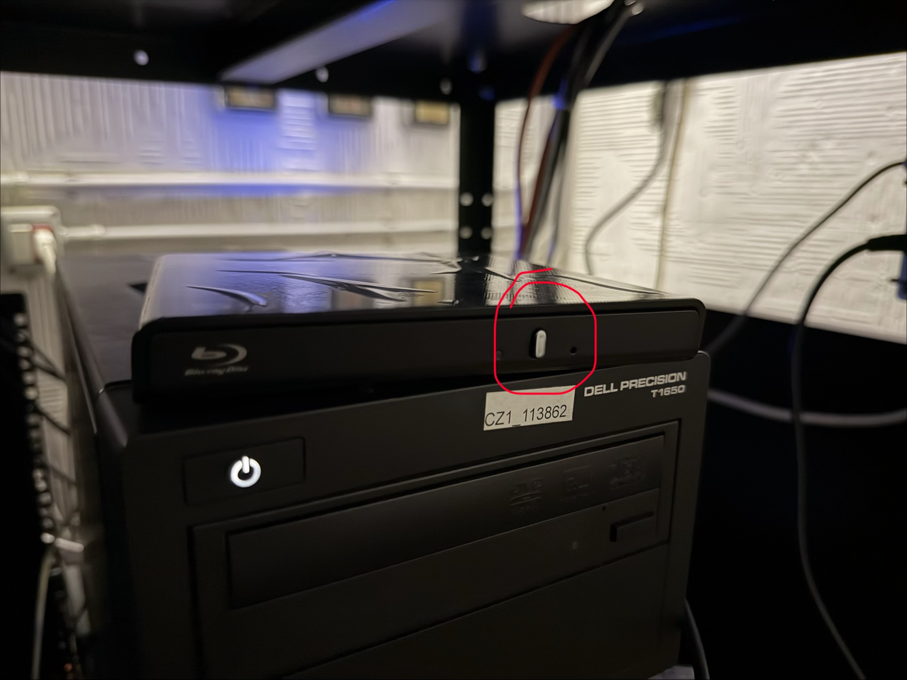
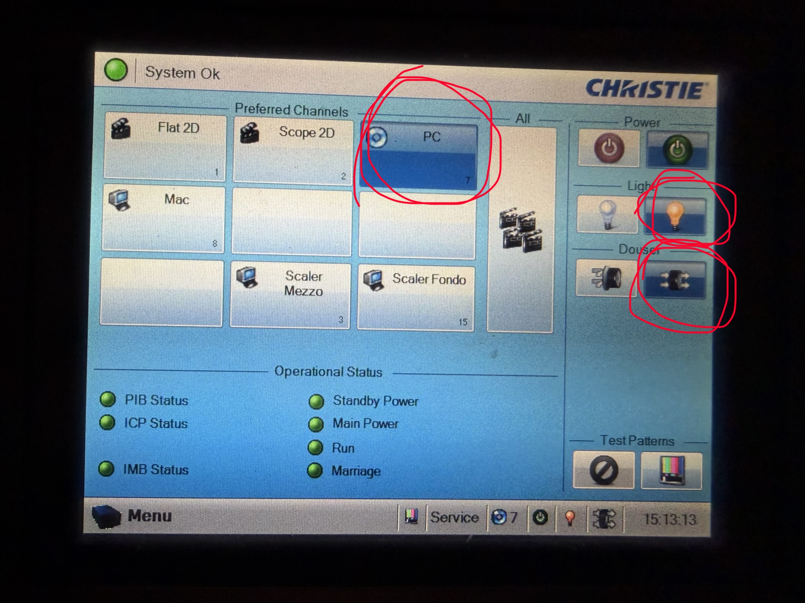
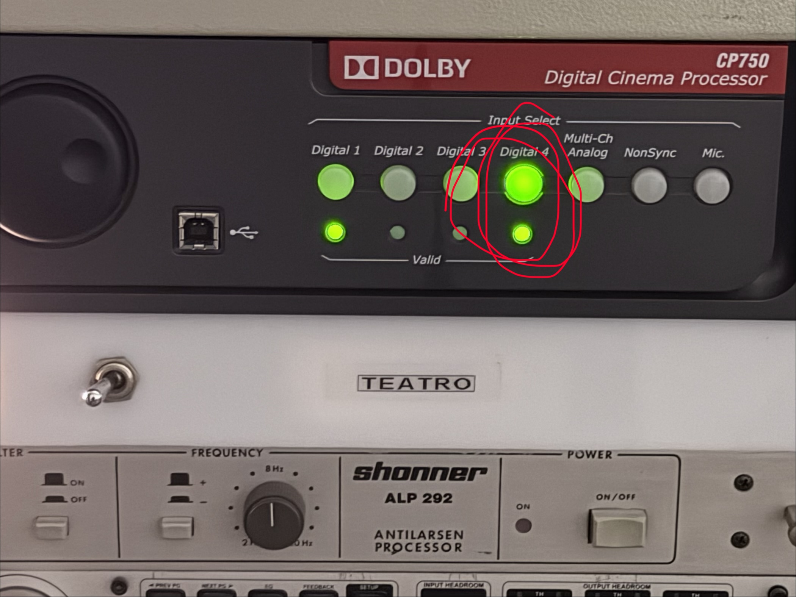

Guida per proiezione da DVD dal PC della cabina

Passo 1: Impostare il PC
- Accendere il PC.
- Controllare che audfio esca su SPDIF-Out
- Controllare che il volume sia al massimo

Passo 2: DVD e VLC
- Aprire il lettore con il tasto grigio.
- Inserire il DVD e chiudere
- VLC si apre in automatico e parte il DVD (ci vuole qualche decina di secondi)

Passo 3: Impostare proiettore
- Accendere la lampada premendo sulla lampadina di destra.
- Assicurarsi che il Douser sia aperto, è l'icona sotto la lampadina, sempre a destra (si può chiuderlo e aprirlo per proiettare o meno, senza spegnere la lampada).
- Premere il tasto PC, il terzo dei tasti grandi, fila in alto

Passo 4: Impostare audio dolby
- Premere il tasto Input Select -> Digital 4

Passo 5: Regolare il volume audio dolby
- Regolare da qui il volume (di solito 5.5)